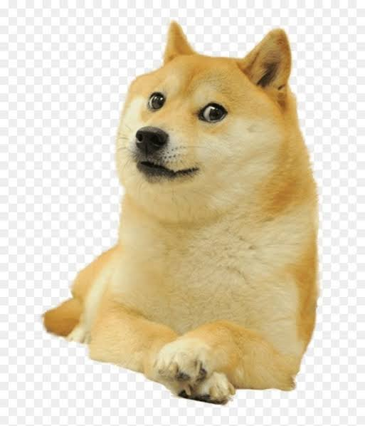
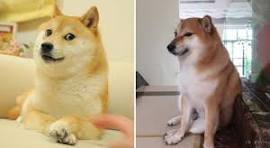
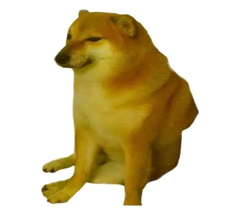
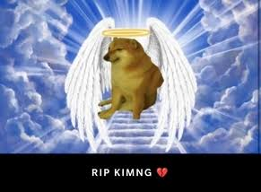

.jpg)
Doge&Cheems






Doge: Real-life prototype: It is based on a Japanese Shiba Inu named Kabosu. The dog rose to global fame around 2010 thanks to a photo showing it with crossed paws and a look that was both mocking and mesmerizing. In memes, it often appears with exaggerated muscles—earning the "Swole Doge" persona—and represents people or things from the past that are strong, confident, omnipotent, or unwavering.
Cheems: Real-life inspiration. Cheems is based on a Shiba Inu named Balltze who lived in Hong Kong. The dog shot to fame in 2017 after a photo of it sitting on a chair with a sad expression went viral. It became an internet sensation thanks to its unique, world-weary look—conveying a sense of resignation and slight grievance—and is frequently used in meme culture to symbolize the vulnerability, anxiety, helplessness, and "loser" mentality often felt by people today.

A sad fact is that the real-life inspirations behind both memes have passed away: Balltze (the dog behind Cheems) died of cancer on August 18, 2023, at the age of 12, while Doge (Kabosu) passed away on May 24, 2024, at the age of 18.
